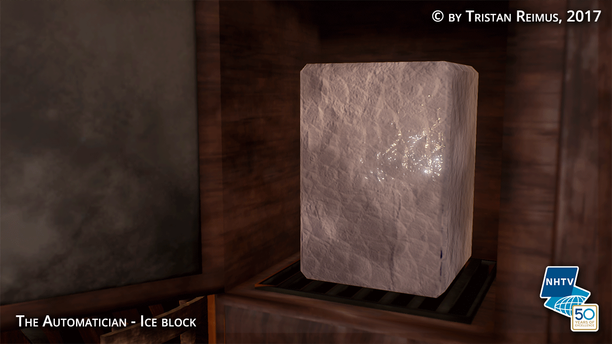
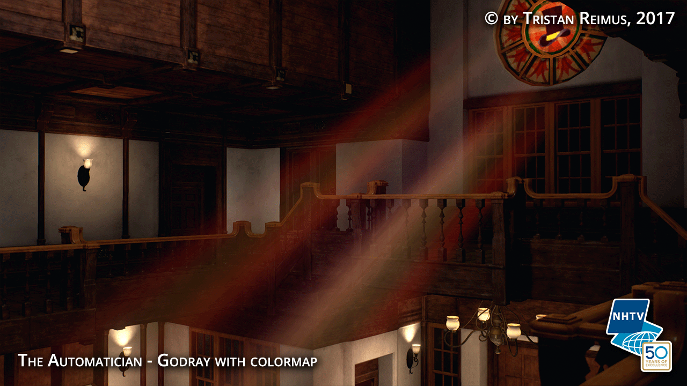
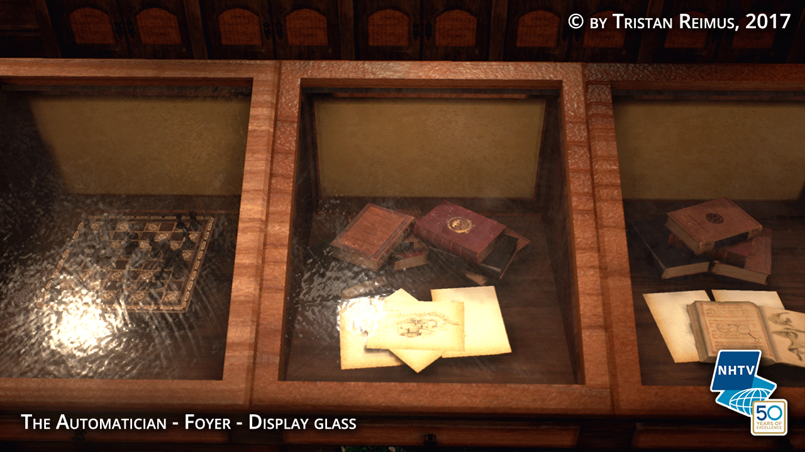
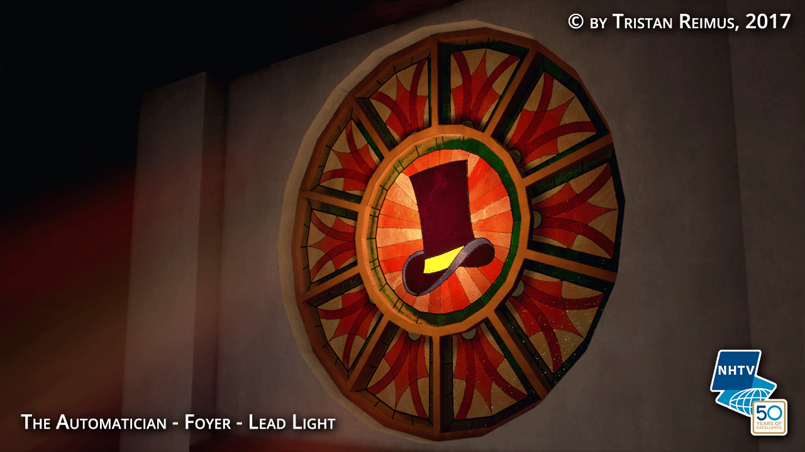
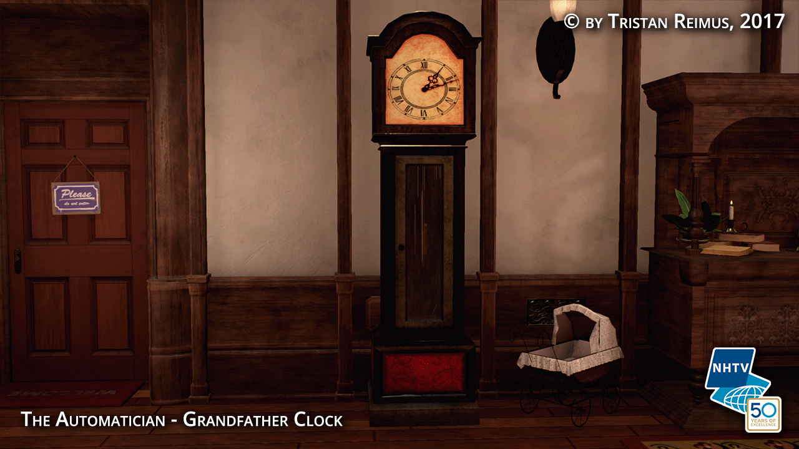
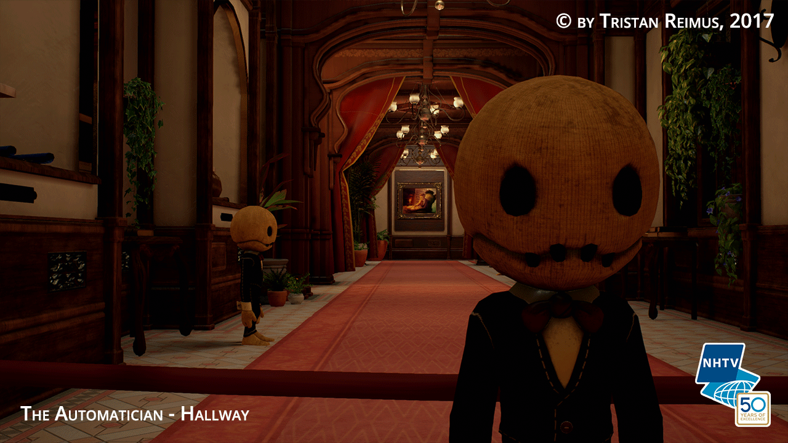

Fire VFX
Flame particles rendered in Houdini and made into particle effects in Unreal Engine 4.
| Type: VFX | Project: The Automatician | Engine: Unreal Engine 4 |
Ice
Ice block mesh, shader and particle effect that can be interacted with as part of a quest.
| Type: VFX / Shaders | Project: The Automatician | Engine: Unreal Engine 4 |
Arrows
Mesh particle effects and shaders for arrows that convey direction to the player.
| Type: VFX / Shaders | Project: The Automatician | Engine: Unreal Engine 4 |
Godrays
Shafts of light that can be varied in size, intensity, color and more. Highly adaptable for many kinds of types of light sources.
| Type: VFX | Project: The Automatician | Engine: Unreal Engine 4 |
Glass
Glass shaders in Unreal with different uses. Realistic look with low performance, uses cubemaps for accurate reflections.
| Type: VFX / Shaders | Project: The Automatician | Engine: Unreal Engine 4 |
Fountain
A small and simple animated skeletal mesh with an highly emissive candle material
| Type: VFX / Scripting | Project: The Automatician | Engine: Unreal Engine 4 |
Kitchen

The design of a Victorian style kitchen and creation of the assets in the scene.
| Type: Assets / Design | Project: The Automatician | Engine: Unreal Engine 4 |
Swords

3D model and texture of decorative swords.
| Type: Assets | Project: The Automatician | Engine: Unreal Engine 4 |

Lead Light
3D asset with special shader and emitting light, also the initial reason for expanding the godrays to support color maps
| Type: VFX / Assets | Project: The Automatician | Engine: Unreal Engine 4 |
Grandfather clock
3D model and texture of grandfather clock, also uses glass material.
| Type: Assets | Project: The Automatician | Engine: Unreal Engine 4 |
Game Release Plan
The methods I used to make the Planning that enabled me to manage the game towards a state that’s suitable for release.
| Type: Planning / Design | Project: The Automatician | Engine: Unreal Engine 4 |
Lighting

The lighting of the entire Victorian mansion in The Automatician
| Type: Lighting | Project: The Automatician | Engine: Unreal Engine 4 |